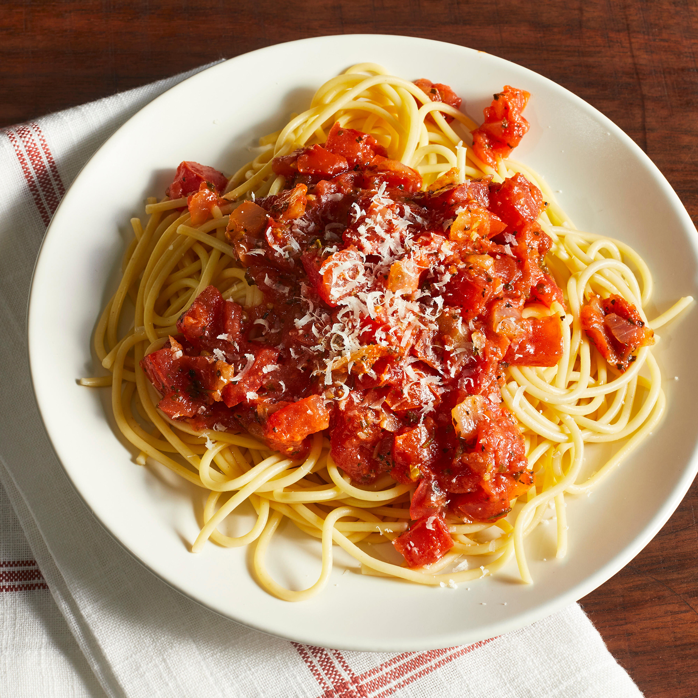

A wonderful homemade tomato sauce made from fresh tomatoes, onion, garlic, and herbs. Serve over spaghetti noodles, or use in your favorite lasagna recipe.

Ingredients:
- Fresh Tomatoes
- White sugar
- Onion
- Garlic powder, basil, parsley, salt.
- Spaghetti
Steps:
- Peel and chop the tomatoes
- Cook the onion and garlic on olive oil (5 minutes)
- Add the remaining ingredients for the tomato sauce and bring to a boil (1~2 hours)
- Cook the pasta and pour the sauce on top of it